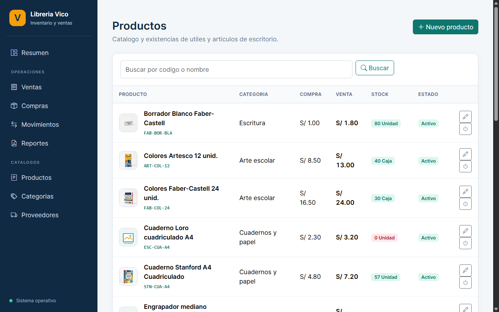
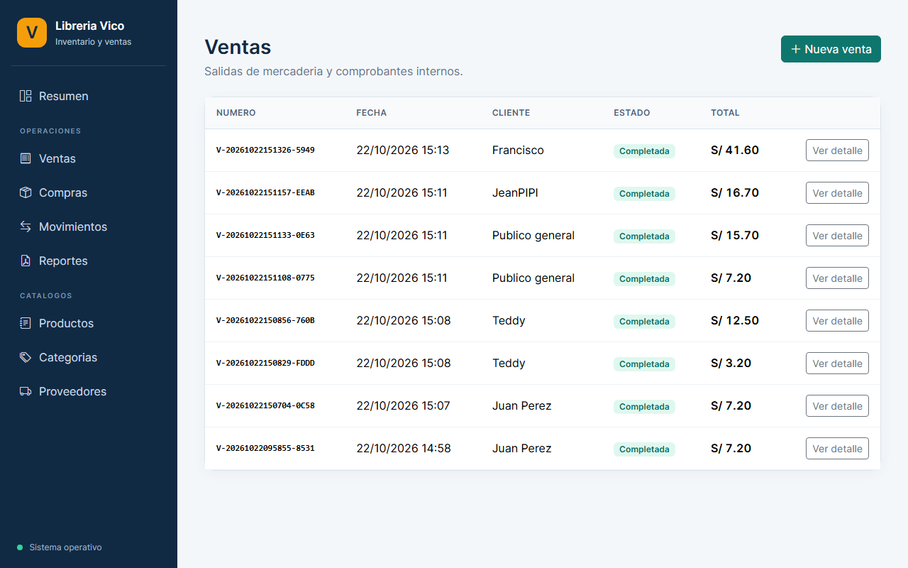
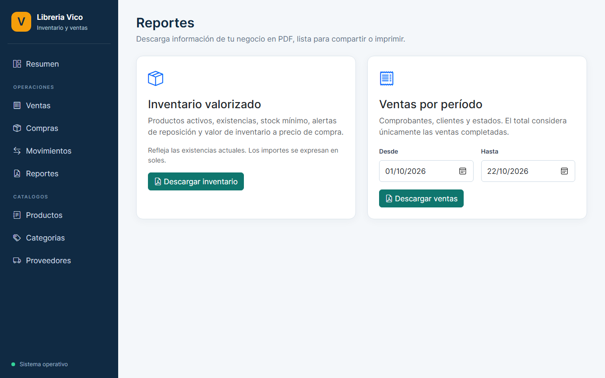

Figura 1: Panel de Control principal con resumen financiero en tiempo real.
Figura 1: Panel de Control principal con resumen financiero en tiempo real.
El presente informe documenta el desarrollo y puesta en producción del Sistema Web de Gestión Comercial y Control de Inventarios para "Librería Vico". El proyecto resuelve de forma definitiva los problemas críticos de administración manual en negocios minoristas de útiles y papelería: descuadres de caja, quiebres imprevistos de stock, cálculos lentos en mostrador y falta de reportes financieros confiables. Desarrollado bajo una arquitectura por capas MVC con Java 21 y Spring Boot, implementa persistencia transaccional con Spring Data JPA sobre una base de datos MySQL 8 distribuida (TiDB Cloud Serverless), interfaces web reactivas con Thymeleaf / Bootstrap 5 y exportación formal en PDF con JasperReports 7. Todo el sistema está contenerizado mediante Docker y desplegado 24/7 en la nube en Render PaaS con certificado SSL activo a costo cero.
Librería Vico es una microempresa peruana orientada a la venta de artículos escolares, útiles de oficina, manualidades y papelería general. Su catálogo abarca más de 18 familias de productos con marcas representativas como Stanford, Faber-Castell, Artesco y Vinifan.
Antes de la adopción del sistema informático, la librería enfrentaba cuatro graves deficiencias:
@Version).Cada componente tecnológico fue seleccionado estratégicamente para asegurar alta disponibilidad, bajo consumo de memoria y soporte industrial a largo plazo:
| Tecnología | Versión | Justificación Técnica y Rol en el Proyecto |
|---|---|---|
| Java (LTS) | Java 21 | Versión oficial de soporte extendido. Ofrece compilación tipada estricta, mejoras drásticas en recolección de basura (*Garbage Collection*) y soporte nativo para hilos virtuales y concurrencia. |
| Spring Boot | 4.x / 3.x | Ecosistema estándar de desarrollo empresarial. Facilita la Inversión de Control (IoC), Inyección de Dependencias (DI) e integración nativa de capas web, seguridad y transacciones. |
| Spring Data JPA | Hibernate 7 | Abstracción de acceso a datos mediante repositorios tipados. Mapea clases Java a tablas SQL sin código repetitivo y gestiona el ciclo de vida de transacciones con @Transactional. |
| TiDB Cloud | MySQL 8 Serverless | Base de datos relacional distribuida nativa en la nube, 100% compatible con MySQL 8. Provee escalabilidad automática, replicación y cumplimiento de estándares ACID con costo $0. |
| Flyway | 10.x | Control de versiones para base de datos. Ejecuta migraciones automáticas secuenciales (V1 a V5) creando tablas y productos semilla al arrancar el contenedor en la nube. |
| Thymeleaf | 3.x | Motor de plantillas Java de renderizado del lado del servidor (*Server-Side Rendering*). Produce HTML5 limpio sin fragmentar la lógica ni depender de empaquetadores frontend pesados. |
| Bootstrap & Icons | 5.3 / 1.13 | Framework de hojas de estilo adaptable (*Responsive Design*), garantizando que el punto de venta funcione tanto en pantallas de PC como en tabletas y celulares de los encargados. |
| JasperReports | 7.0.6 | Motor líder de reportes empresariales. Genera documentos PDF con cabeceras corporativas, paginación dinámica, cálculo de totales en Soles (S/) y fuentes integradas DejaVu Sans. |
| Docker | Multi-Stage | Aísla el proceso de compilación (Maven + JDK 21) del runtime de producción (Alpine Linux ligero con utilidades tipográficas y fuentes), optimizando el uso de memoria a menos de 380 MB. |
| Render.com | Web Service | PaaS en la nube conectado por integración continua (CI/CD) a GitHub. Provee servidor web automatizado, certificado SSL (HTTPS) y enlace público permanente. |
El sistema sigue una arquitectura estricta en capas desacopladas, lo que garantiza mantenimiento modular y previene la mezcla de lógica visual con acceso a datos:
Captura las interacciones del usuario en mostrador, gestiona el carrito reactivo y despacha solicitudes HTTP seguras (POST/GET).
Valida los parámetros de entrada y formularios DTO. Nunca invoca consultas de base de datos directamente.
Aplica las reglas comerciales: valida existencias, comprueba precios de costo vs venta, actualiza el Kardex y gestiona el @Transactional.
Genera consultas optimizadas a MySQL y gestiona el control de versiones con bloqueo optimista (@Version).
Almacena la información de forma persistente con motor InnoDB, claves foráneas, restricciones UNIQUE y transacciones ACID.
A continuación se documenta el comportamiento de cada módulo del sistema en su entorno real en producción, adjuntando las capturas de pantalla de la aplicación:
El panel de control permite monitorear las métricas financieras clave al instante: valor total del inventario valorizado en Soles (S/), total facturado en el día y advertencias visuales de stock bajo.
Figura 1: Panel de Control principal con resumen financiero en tiempo real.
La interfaz de venta permite seleccionar artículos por categoría con botones táctiles + y −, calcular subtotales y bloquear la venta si no existe stock disponible.
 Figura 2: Punto de Venta interactivo con catálogo de útiles y carrito de compras.
Figura 2: Punto de Venta interactivo con catálogo de útiles y carrito de compras.
Administra las 18 familias de productos escolares y de oficina peruanos, asegurando que el precio de venta nunca sea inferior al costo de adquisición.

Figura 3: Catálogo con control de stock, código SKU, precios e imágenes de producto.
Muestra la relación de transacciones generadas con su código correlativo único (ej. V-20261022150856-760B), fecha, cliente y opción de anulación con restitución al Kardex.

Figura 4: Historial de ventas confirmadas en tiempo real en la base de datos TiDB.Subsistema que procesa los datos y compila en memoria informes ejecutivos de Inventario Valorizado y Ventas por Rango de Fechas en formato PDF.

Figura 5: Módulo de generación y descarga directa de reportes ejecutivos en PDF.Impacto cuantitativo y cualitativo de la implementación del sistema en Librería Vico:
| Dimensión Comercial | Antes (Gestión Manual / Cuaderno) | Después (Con Librería Vico Web) |
|---|---|---|
| Exactitud de Stock | Conteo visual aproximado; constantes quejas por ofrecer productos ya agotados. | Descuento exacto e instantáneo con cada venta. Bloqueo en 0 existencias. |
| Tiempo de Cobro | Cálculo con calculadora manual o celular; 3 a 5 minutos por cliente. | Menos de 30 segundos con el carrito reactivo del punto de venta. |
| Prevención de Quiebres | La librería se percataba de la falta de cuadernos en plena campaña escolar. | Alertas automáticas en el Dashboard para productos con stock menor al mínimo. |
| Seguridad de Datos | Cuadernos físicos expuestos a manchas, extravío o deterioro. | Base de datos en la nube (TiDB) con backups automáticos y cifrado SSL. |
| Toma de Decisiones | Desconocimiento del capital total inmovilizado en mercadería. | Reportes en PDF con JasperReports que calculan la valorización al centavo en Soles. |
@Version) garantiza que los datos de stock y ventas nunca presenten anomalías ni descuadres.